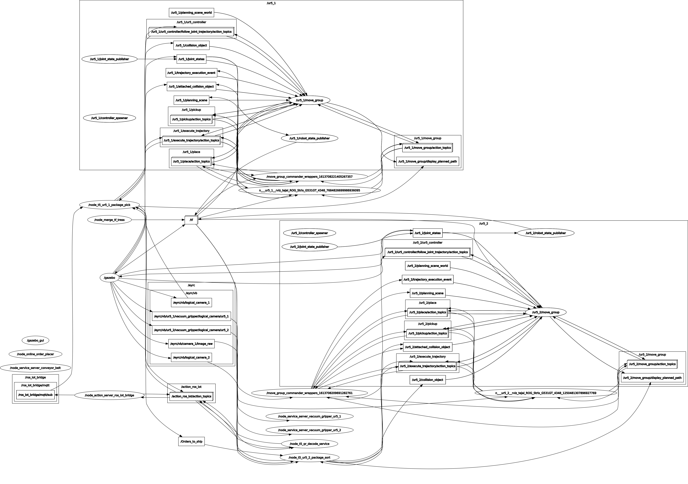

Abstract
Inspired by this visualisation of Industry 4.0, the current edition of the e-Yantra Robotics Competition features a theme called ‘Vargi-Bots’. Vargi is taken from a Sanskrit word, Vargikaran (वर्गीकरण) which means to separate objects based on their category. The theme is set in the abstraction of a warehouse management system designed in Gazebo, which is a 3D dynamic simulator used to efficiently simulate robots in complex environments.
The arena is an automated warehouse setting where essential packages are required to be sent out to different parts of a city. Since Industry 4.0 heavily focuses on automation here the warehouse will only consist of two industrial robotic arms which will be used by the teams. As the requirements are sent to the warehouse, one robotic arm will identify the packages from a shelf and place them on a conveyor belt and the other robotic arm at the end of the conveyor belt will pick these objects from the conveyor and place them into bins. Each bin represents a destination for the package. As the packages are sent out from the warehouse there will also be alerts sent to the user via email notifying them about the package being shipped from the warehouse.
The packages to be delivered have their own priorities. Packages having a higher priority are intended for a natural disaster or a pandemic situation. Other packages with lower priorities are for general purposes. Similar to a conductor in an orchestra, in this theme, the participants have to design their own conductor (controller) for their warehouse to make smart decisions in order to deliver high priority packages as quickly as possible.
-
UR5 Arms
These are used to carry out the pick and place functions. The packages are kept in a shelf from which they are supposed to be picked upon receiving an order. The picked package is then placed on the conveyor belt and sent towards the other Arm. The most important part to focus for this arm was the precision with which it would pick the package. The chances of collisions with external objects were high. If the package is not properly attached to the Vaccum Gripper it may collide with the shelf or other packages in it. Hence the trajectory set is such that it picks the package from the shelf and places it on the conveyor belt without any collision. It also ensures that the package is in perfect alignment with the vaccum gripper before it is turned on.

The second UR5 Arm picks the packages from the conveyor belt and drops them into their respective bins. The chances of collisions are the greates in UR5 arms. We have tried our best to set a trajectory that would avoid any collision of the arm, with or without the package. While doing this we have not neglected the fact that time taken in making the drop is just as crucial. the trajectory used is collision free and the shortest one possible.
-
Cameras
The colour and QR code decoding(Computer Vision techniques) is done by the 2D camera located in front of the shelf, behind the first UR5 arm. This arm is responsible for recognizing the colour of the package and hence its priority. After receiving the order, this camera is used to ensure we have picked the right package.

The two logical cameras are located above the conveyor belt in front of each UR5 arm. These cameras give only the package name ie., package001 etc. These cameras have been used by us to co-ordinate between the two UR5 arms as well as keeping a record of number of packages picked by the second arm.

Implementation
-
The task begins with starting the Gazebo Environment along with Rviz. Gazebo is the environment where the entire simulation would take place while Rviz is the window that we have used to monitor the movement of the UR5 arms and the collisions of various elements used in this task.
-
The first component to get activated is the 2D camera (Cam1 in our codes). This camera detects not only the number of packages but also their QR codes from where we can get the details of the package (Item, SKU, location, Priority etc.)
-
This camera is then to detect 9 of 12 packages, instead of which we have opted to detect all 12 of the packages in the shelf. The reason to detect all packages was to get the location of all packages and trying out faster trajectories by trial and error.
-
As soon as the packages are detected the IMS Inventory sheet is updated of all the detected packages. This is done by subscribing to the MQTT client. MQTT client publishes the data to the Inventory sheet displaying the Timestamp and details of the package scanned from the 2D camera.
-
A total of 9 orders are published after one minute of Simulation time, each republished on a unique ID. These orders are published randomly and at various intervals of time. The orders are sorted as the priority as soon as they are received.
-
Then we process the orders according to the priority order (Red- Yellow- Green) and place the corresponding packages on the conveyor. Here, Logical Camera_1 placed at the top of the conveyor belt registers the package being placed as well but we have not made much use of this camera for our code.
-
Once the package is placed on the conveyor belt by UR5_1 the ‘Order Dispatched’ sheet is updated and an Email of the order being dispatched is sent. This sheet is also a part of the IMS. The email address used for this task is the team ID account we have created for E-Yantra.
-
The package placed on the conveyor belt is then picked by UR5_2 once it comes into the field of vision of Logical Camera_2. As soon as this camera registers the package arriving the conveyor belt is stopped till UR5_2 has picked up the package.
-
It then gets sorted into its respective bin followed by another email being sent of the order getting delivered.
-
Additionally, the ‘Order Shipped’ sheet is update in the IMS which keeps track of all the orders shipped and their time.
-
The WMS sheet is update simultaneously throughout the task which acts as a Summary sheet of the IMS also called the Dashboard. This used to reflect on the real-time values.
RQT Graph
